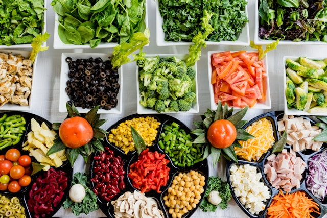

| Pastitsio |
|---|
|
A baked Greek pasta dish with meat sauce and creamy bechamel on top. |
| Souvlaki |
|
Grilled meat on a skewer, often served in a pita with tomato, onion, fried potatoes and tzatziki. |
| Gemista |
|
Vegetables like tomatoes or peppers stuffed with rice and herbs. |
| Rice & Meatballs |
|
Dish with rice served alongside seasoned meatballs. |
 |